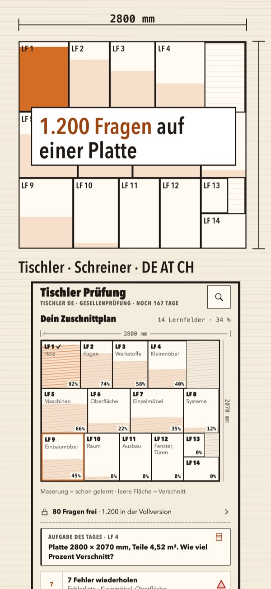
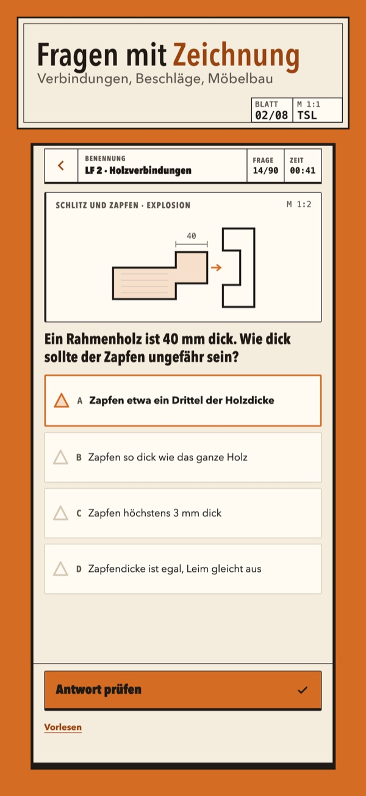
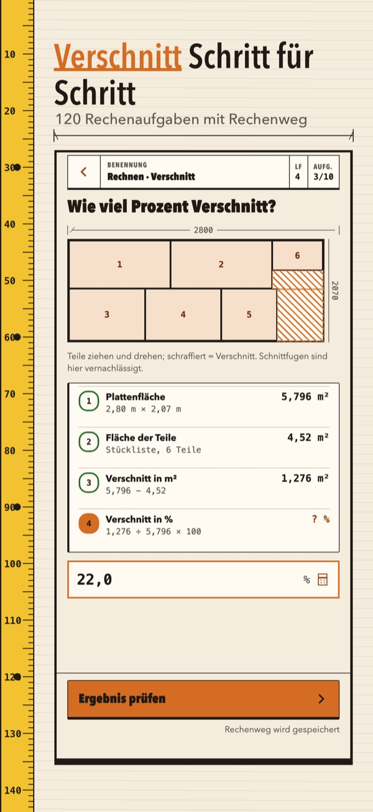

Tischler Prüfung – Lernfelder
Gesellenprüfung & Schreiner QV
Einmal kaufen – kein Abo. Tischler Prüfung begleitet dich durch die Ausbildung bis zur Gesellenprüfung (DE), zur LAP (AT) oder zum QV als Schreiner/in EFZ (CH): Holz und Werkstoffe, Verbindungen, Oberfläche, Maschinen, Möbel- und Innenausbau. Die Startseite ist ein Zuschnittplan: jedes Teil der Platte ist ein Lernfeld, die Maserung zeigt, was du schon kannst.



- 1.200 eigene Fragen in 14 Lernfeldern, mit Erklärung
- Fragen mit eigenen Zeichnungen: Schlitz und Zapfen, Zinken, Dübel
- 120 Rechenaufgaben: Verschnitt, Kalkulation, Leimmenge, Holzfeuchte
- Probeprüfungen im eigenen Übungsformat, mit Auswertung je Lernfeld
- Fehlerliste, auch als PDF für die Berufsschule
- Erklärungen vorlesen lassen
- Tischler (DE, AT) oder Schreiner (CH): Begriffe passend zum Land
- Offline und ohne Konto, Fortschritt per iCloud, Widget mit Prüfungscountdown
Bald im App Store
Hilfe · Datenschutz